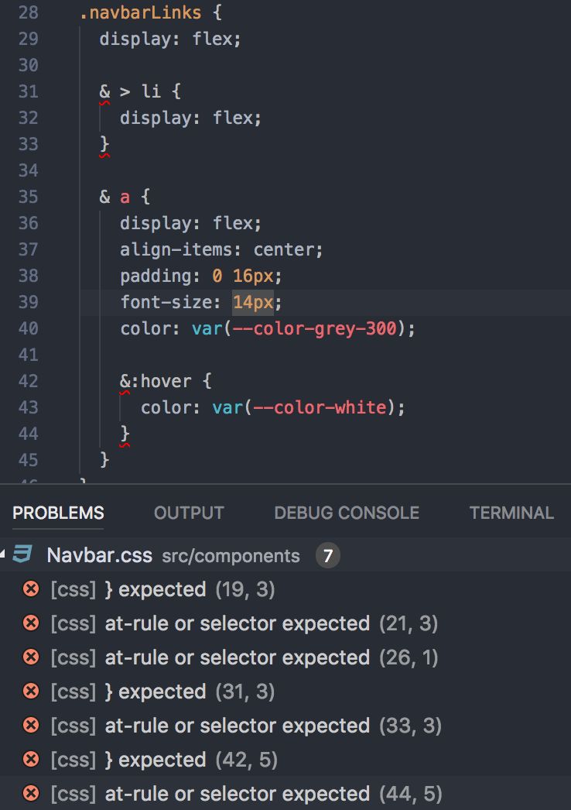

CSS Kod Yapısı
Bir CSS Koduna Bakış
Bir CSS kodu iki temel bileşenden oluşur. Biri element ve stilleri birbirinden ayıran bir seçim. Diğeri ise bir ya da daha fazla özelliği bildirdiğimiz ifade bölümü.
Seçim genel olarak stilini belirleyeceğimiz HTML elementidir, h1, a, body, p gibi.
İfadeler ise sürekli olarak özellik: değer; şeklinde { ve } işaretleri arasında sıralanırlar.
CSS Örneği
Bir css ifadesi her zaman noktalı virgül (;) ile biter. İfadeler bir kıvrımlı parantez içinde yer alır. Aşağıdaki örneğe bakalım:CSS Kodu
p { color: red; text-align: center; }
CSS Kodu
p
{
color: red;
text-align: center;
}
CSS'de Açıklama Kullanmak
Her programlama dilinde ve HTML'de de olduğu gibi bazen kullanıcıların görmeyeceği ancak bizim için referans olacak açıklamalar yazmak gerekebilir. Bu durum için CSS de /* açıklama */ kullanılmaktadır:CSS Kodu
/* Paragraf Stilim */
p
{
/* Renk kırmızı olacak */
color: red;
/* Ortalanmış olacak */
text-align: center;
}

Muhammed Aktan
Website designer